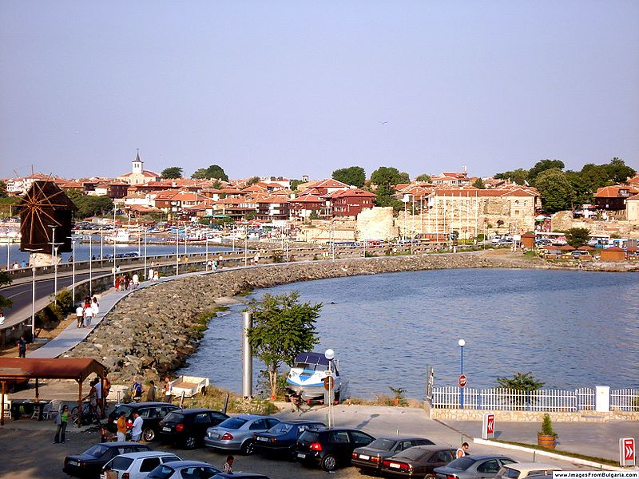
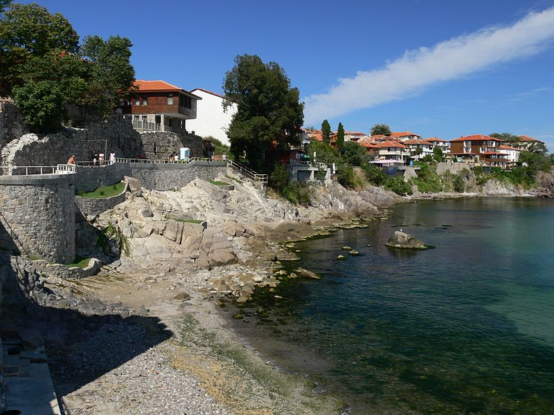
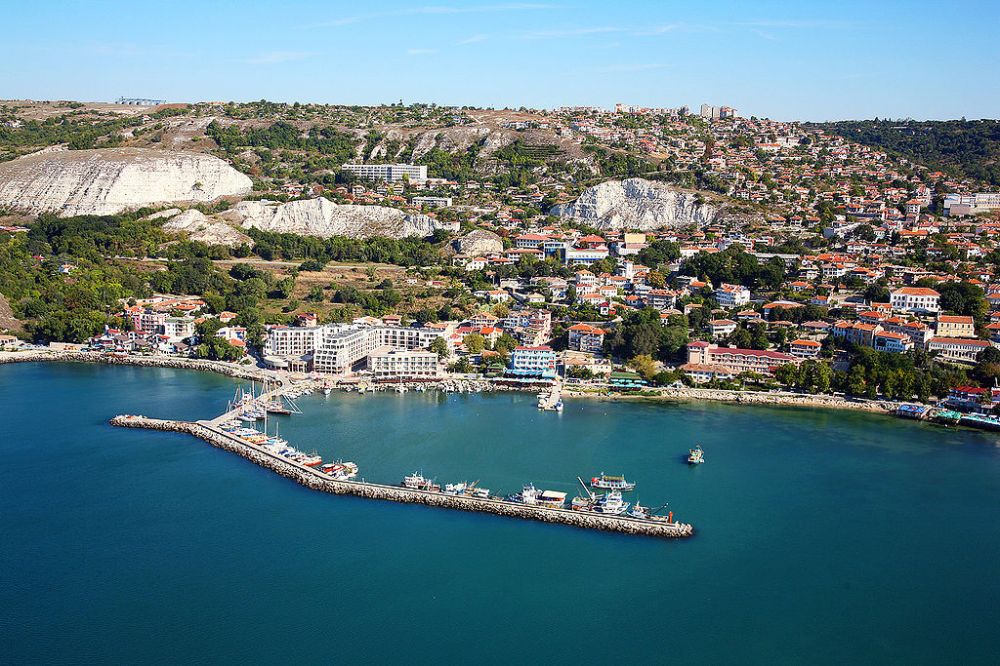

 Несебър е град, азположен в Югоизточна Бълга ия. Той се намира в Община Несебъ , Област Бур гас, в съседство на север с най-големия български черноморски курорт Слънчев бряг. Градът е административен център на община Несебър и е един от най-древните градове в Европа, възникнал преди повече от 3200 години. Островът на Несебър древният град Месeмбрия, наречен през късното средновековие Месембрия и по-късно Несебър, е населен преди хилядолетия, в края на бронзовата ера. Старите траки го наричат "Мелсамбрия", което означава "град на Мелса", легендарният основател на селището. Месамбрия има две удобни пристанища южно и северно, където и до днес се намират множество останки от древни плавателни съдове. Културното наследство на Несебър е запазено в пет музейни експозиции. В старата част на града е имало около 42 църкви, от които по-малко от половината са открити от археолозите и консервирани, а действаща в момента е само една. Д ругите по-запазени са превърнати в картинни галерии. Провлакът, свързващ старата част с новата, е дълъг около 400 метра. По средата на провлака се намира старата мелница на града, която не функционира като такава, а е само туристическа атракция. В началото на квартала, в новата част на Несебър , се намира истинската мелница на града, която сега е вградена в хотел.
Към Съдържание Созопол е град в Югоизточна България на Черно море. Той е разположен на няколко малки полуострова в южната част на Бургаския залив. С население от 4317 души по данни от Преброяването към 1 февруари 2011 година, той се намира в област Бургас и е административен център на Община Созопол. Созопол е наследник на гръцката колония Аполония и заедно с Несебър е един от най-старите български градове. От античността до 17 век Созопол е процъфтяващ търговски център. Той е известен както рибарски и винен център и заема важно място в търговията със зърно от Тракия. От късната античност градът се развива като важен църковен център с множествно средновековни манастири. Със своето културно-историческо минало, със запазената си архитектура от 18 - 19 век, своите плажове и ежегодните празници на изкуствата Аполония Созопол привлича днес множество туристи. Туризмът е ключов в икономическата характеристика в най-новата история на Созопол. Градът и общината са основна дестинация по южното българско Черноморие. В непосредствена близост до града са няколко къмпинга: „Градина“, „Златна рибка“, „Каваци“, „Веселие“ и „Смокиня“. Първите два, както и последните три имат обща брегова ивица, която е и един от най-големите нудистки плажове в България.
Към Съдържание Балчик е крайбрежен град в област Добрич, Североизточна България, разположен в средните части на северното Българско Черноморие, в близост до курортния комплекс Албена. Той е административен и стопански център на едноименната община Балчик. Населението на град Балчик към края на 2011 година е 11 321 жители. Значима забележителност на Балчик е архитектурно-парковият комплекс Балчишки дворец - състоящ се от комплекс вили изграден 1924-1934 г. за лятна резиденция на румънската кралица Мария Единбургска в най-южната точка на новоокупираните земи и създадената след възвръщането на Южна Добруджа от България от академик Даки Йорданов Ботаническа градина на площ от 194 дка. Намира се на черноморския бряг, близо са курортите Албена, Кранево, Златни пясъци и градовете Варна, Добрич и Каварна. Геоложката основа е от бял варовик. Пред повечето собственици на къщи стоят проблеми със свлачищата. Като цяло температурата на морската водата е 2 3 градуса по-ниска, отколкото по южното българско Черноморие. Град Балчик е център за много културни мероприятия. Ежегодно се провеждат множество фестивали. С традиции е детският фестивал Усмивките на морето. С тенденция да се превърнат в ежегодни фестивали са Балфест международен филмов фестивал за документални филми и международния Филм форум. Градът е известен с културните празници през месец септември свързвани обикновено с имената на Иван Гранитски, Стефан Цанев и други. По същото време се провеждат и фестивалите на научната фантастика "Булгакон" и "Златен Кан".
Към Съдържание